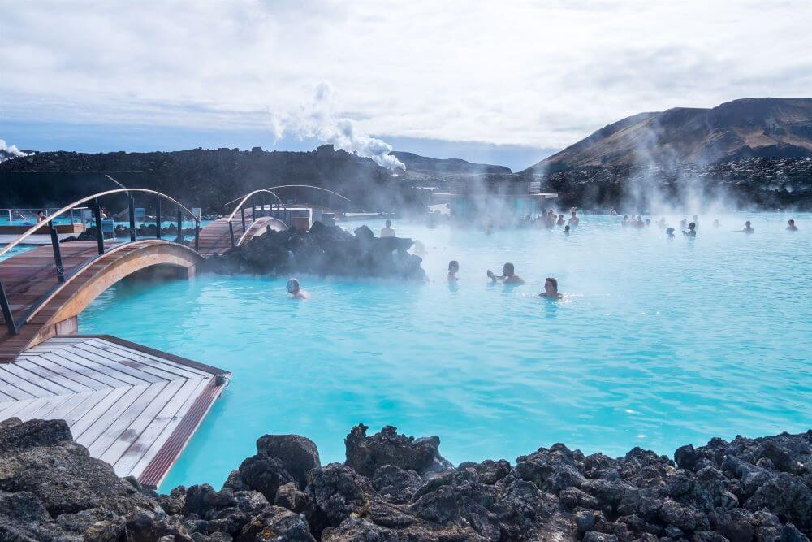
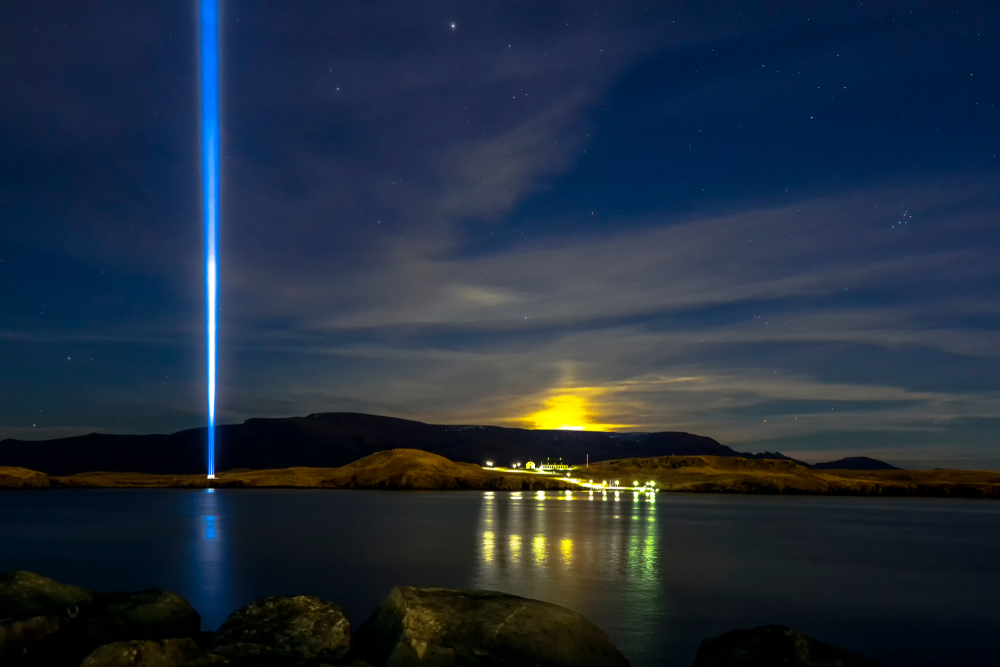
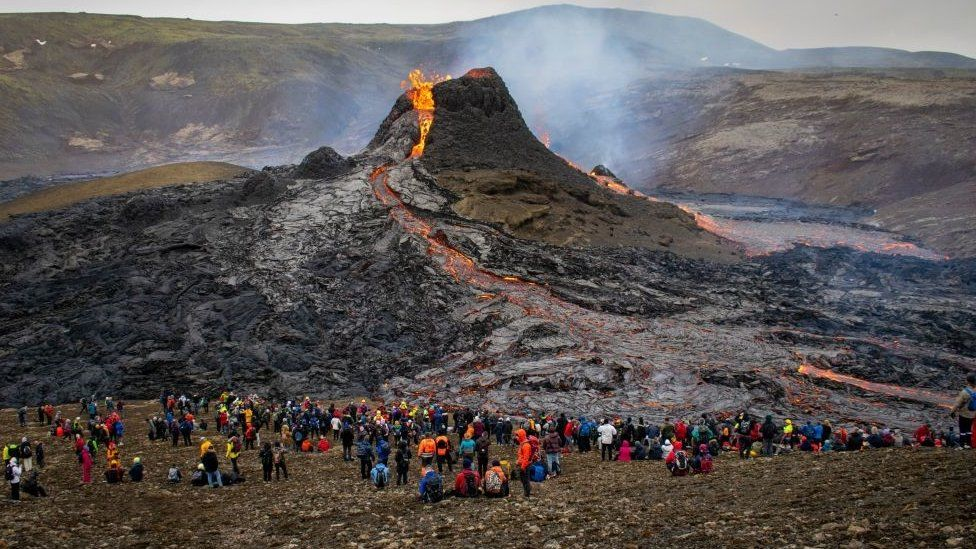
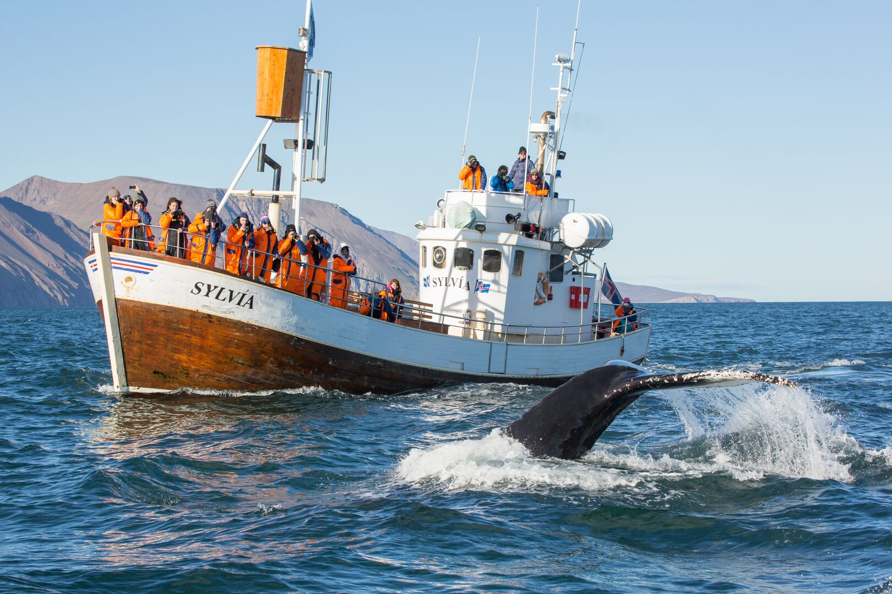

QUE PUEDES HACER EN REIKIAVIK
AURORAS BOREALES
Disfruta de las maravillosas vistas nocturnas que te ofrece la cuidad. En los meses de invierno, el cielo islandés se transforma en un espectáculo de luces danzantes. Puedes verlas por tu cuenta o con tours especializados.

PISCINAS TERMALES
Relájate dándote un baño termal junto al mar. Una opción más auténtica y económica para convivir con la vida diaria de los islandeses y disfrutar de baños calientes al aire libre.

ISLA VIDEY
No te quedes siempre en el mismo sitio! Visita otras islas cercanas. La isla Videy es una gran opción. Un remanso de tranquilidad a pocos minutos en barco, ideal para caminar entre naturaleza, arte al aire libre y miradores increíbles.

VOLCÁN FAGRADASFJALL
Adéntrate en uno de los paisajes más impactantes de Islandia recorriendo los senderos que rodean el volcán Fagradalsfjall. Aunque su actividad varía con el tiempo, la zona volcánica ofrece un escenario único de cráteres recientes y vistas naturales islandesas.

AVISTAMIENTO DE BALLENAS
Embárcate desde el puerto viejo para observar de cerca algunas de las especies marinas más impresionantes del Atlántico Norte en su hábitat natural. Una experiencia como pocas
ISLA VIDEY
No te quedes siempre en el mismo lugar! Visita otras islas cercanas. La isla Videy es una gran opción. Un remanso de tranquilidad a pocos minutos en barco, ideal para caminar entre naturaleza, arte al aire libre y miradores increíbles.